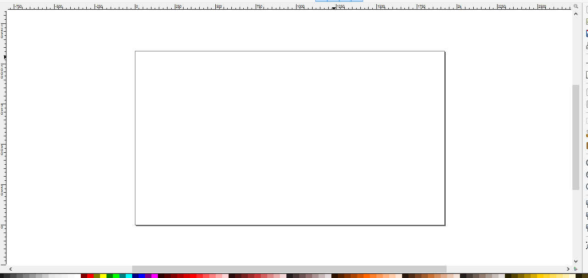
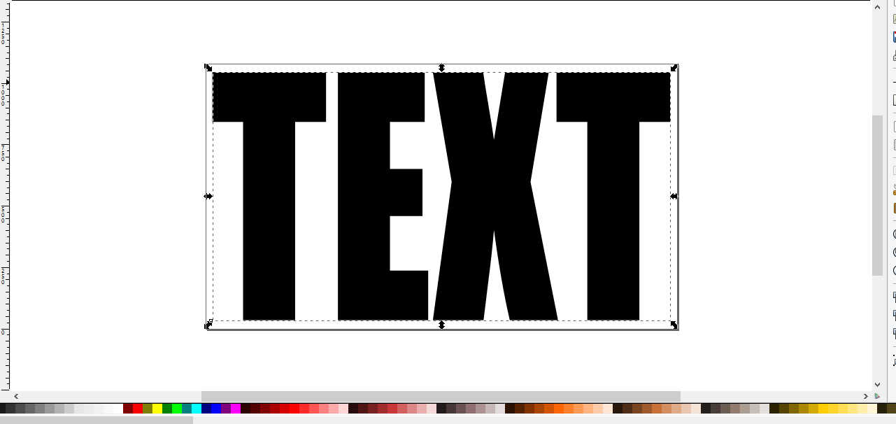

A Responsive See-through Cutout Text Video Effect
In this article I would like to share some notes on the implementation of an HTML video element playing ‘inside’ the letters of a covering text, as shown in the following pen:
One key objective was to develop a responsive component, in order to make not only the video scale up and down to fit its parent container, but also to scale the text preserving its size relationship with the underlying video.
I achieved this goal by using the CSS clip-path property to clip the video against an SVG path defined within a clipPath element.
The text cutouts were edited with Inkscape, using some tricks to ease the exporting of the generated SVG code.
In the first demo, the core technique is illustrated. Then, some eye candy is built on top of it in a couple of additional demos.
The unclipped video: HTML
First things first, the markup. Inside the video tag we specify the URLs for the WebM and MP4 versions of the video, to support a broader range of browsers:
<video>
<source src="/video/mt-baker.webm" type="video/webm">
<source src="/video/mt-baker.mp4" type="video/mp4">
</video>Then we add some attributes to customize the video playing behavior:
<video loop autoplay muted playsinline>
<source src="/video/mt-baker.webm" type="video/webm">
<source src="/video/mt-baker.mp4" type="video/mp4">
</video>- With
loopthe video plays forever autoplayandmutedare used to allow the automatic video playback at page load on all devicesplaysinlinetries to disable the full-screen expansion of the video when it is played on some mobile devices
Finally, a container is wrapped around the video element. This will come in handy when we’ll spice up the basic demo with some visual effects.
So, here it is, the markup code for an unclipped video instance:
<div class="video-container">
<video loop autoplay muted playsinline>
<source src="/video/mt-baker.webm" type="video/webm">
<source src="/video/mt-baker.mp4" type="video/mp4">
</video>
</div>The unclipped video: CSS
Here, the main task to fulfill is to make the video responsive. It must scale up and down, spanning the width of its parent container and keeping its intrinsic aspect ratio:
.video-container video {
display: block;
width: 100%;
}After formatting the video as a block-level element with display: block, assigning a 100% value to its width makes it as large as its container. And that’s all we need, because the initial auto value of the height property and the video intrinsic aspect ratio make it uniformly scale, without distortion.
In the demo, to test this responsive behavior, the same video is instantiated several times inside containers of different widths:
.video-container {
margin: 40px auto;
outline: 1px solid #dadada;
&:nth-of-type(1) { width: 25%; }
&:nth-of-type(2) { width: 50%; }
&:nth-of-type(3) { width: 75%; }
&:nth-of-type(4) { width: 100%; }
}The outline on the video container shows the location and size of the unclipped video in the page layout.
Clipping the video
Thanks to the clip-path CSS property, clipping the video inside the text is simple:
video {
clip-path: url(#clip-00);
}With the url() function we specify the id of the SVG clipPath element where the clipping text is defined.
Note that although the visible geometry of the video is altered by the clipping, the video element is still a rectangular box for the browser, so the page layout is the same as if the clipping was not used.
Creation of the SVG clipPath element
I am going to illustrate a creation, editing and export workflow suitable for Inkscape. I guess similar steps could be put together with other vector editors. Feel free to report your experiences in the comments.
The first step is to keep note of the video aspect ratio, which is its width / height ratio.
Then, in Inkscape, create a document with the same size as the video or just with the same aspect ratio. This will act as a placeholder for the video, so make sure the document borders are visible. Also, remove the default layer created by the program, as this will simplify the code generated by SVG, avoiding the creation of unnecessary

Select the Text tool, pick a nice bold and thick font, enter the text and stretch it to cover the document rectangle as you please.

Now, if we take a look at the code generated by Inkscape we see something like this:
<text
xml:space="preserve"
style="font-style:normal;font-weight:normal;font-size:1147.68029785px;line-height:125%;font-family:sans-serif;letter-spacing:0px;word-spacing:0px;fill:#000000;fill-opacity:1;stroke:none;stroke-width:1px;stroke-linecap:butt;stroke-linejoin:miter;stroke-opacity:1"
x="23.404421"
y="939.04187"
id="text3336"
sodipodi:linespacing="125%"
transform="scale(0.8988993,1.1124717)"
>
<tspan
sodipodi:role="line"
id="tspan3338"
x="23.404421"
y="939.04187"
style="font-style:normal;font-variant:normal;font-weight:normal;font-stretch:condensed;font-family:Impact;-inkscape-font-specification:'Impact Condensed'"
>
TEXT
</tspan>
</text>That’s a bit unwieldy, so let’s convert the SVG <text> element into a path:
<g
transform="scale(0.8988993,1.1124717)"
style="font-style:normal;font-weight:normal;font-size:1147.68029785px;line-height:125%;font-family:sans-serif;letter-spacing:0px;word-spacing:0px;fill:#000000;fill-opacity:1;stroke:none;stroke-width:1px;stroke-linecap:butt;stroke-linejoin:miter;stroke-opacity:1"
id="text3336"
>
<path
d="m 545.68862,31.769213 0,181.566607 -140.09769,0 0,725.70605 -235.92452,0 0,-725.70605 -139.5373,0 0,-181.566607 515.55951,0 z"
style="font-style:normal;font-variant:normal;font-weight:normal;font-stretch:condensed;font-family:Impact;-inkscape-font-specification:'Impact Condensed'"
id="path3348" />
<path
d="m 599.48616,31.769213 393.39432,0 0,181.566607 -157.46981,0 0,172.03997 147.38277,0 0,172.60036 -147.38277,0 0,199.49911 173.16073,0 0,181.56661 -409.08524,0 0,-907.272657 z"
style="font-style:normal;font-variant:normal;font-weight:normal;font-stretch:condensed;font-family:Impact;-inkscape-font-specification:'Impact Condensed'"
id="path3350" />
<path
d="M 1554.9524,31.769213 1472.575,433.009 l 124.4067,506.03287 -218.5524,0 q -39.2273,-135.61457 -71.73,-330.07016 -8.9662,85.73978 -24.6572,182.127 l -22.4156,147.94316 -229.7602,0 85.1794,-506.03287 -85.1794,-401.239787 228.079,0 q 6.1643,37.546181 24.6572,124.967137 14.5702,66.68651 24.0968,122.16519 l 50.4352,-247.132327 197.8179,0 z"
style="font-style:normal;font-variant:normal;font-weight:normal;font-stretch:condensed;font-family:Impact;-inkscape-font-specification:'Impact Condensed'"
id="path3352" />
<path
d="m 2105.8165,31.769213 0,181.566607 -140.0976,0 0,725.70605 -235.9246,0 0,-725.70605 -139.5373,0 0,-181.566607 515.5595,0 z"
style="font-style:normal;font-variant:normal;font-weight:normal;font-stretch:condensed;font-family:Impact;-inkscape-font-specification:'Impact Condensed'"
id="path3354" />
</g>Now we have a group containing a path element for each letter of the text. Ungrouping it leaves this set of paths at the root level. This step, besides removing the unneeded group, modifies the coordinates of the path elements to account for the transform that was applied to the removed parent group. So, after this step, there are no transform attributes in the SVG:
<path
inkscape:connector-curvature="0"
id="path3348"
style="font-style:normal;font-variant:normal;font-weight:normal;font-stretch:condensed;font-size:medium;line-height:125%;font-family:Impact;-inkscape-font-specification:'Impact Condensed';letter-spacing:0px;word-spacing:0px;fill:#000000;fill-opacity:1;stroke:none;stroke-width:1px;stroke-linecap:butt;stroke-linejoin:miter;stroke-opacity:1"
d="m 490.51912,35.34235 0,201.98771 -125.93372,0 0,807.32744 -212.07238,0 0,-807.32744 -125.429984,0 0,-201.98771 463.436084,0 z" />
<path
inkscape:connector-curvature="0"
id="path3350"
style="font-style:normal;font-variant:normal;font-weight:normal;font-stretch:condensed;font-size:medium;line-height:125%;font-family:Impact;-inkscape-font-specification:'Impact Condensed';letter-spacing:0px;word-spacing:0px;fill:#000000;fill-opacity:1;stroke:none;stroke-width:1px;stroke-linecap:butt;stroke-linejoin:miter;stroke-opacity:1"
d="m 538.87769,35.34235 353.62188,0 0,201.98771 -141.5495,0 0,191.3896 132.48227,0 0,192.01302 -132.48227,0 0,221.93711 155.65406,0 0,201.98771 -367.72644,0 0,-1009.31515 z" />
<path
inkscape:connector-curvature="0"
id="path3352"
style="font-style:normal;font-variant:normal;font-weight:normal;font-stretch:condensed;font-size:medium;line-height:125%;font-family:Impact;-inkscape-font-specification:'Impact Condensed';letter-spacing:0px;word-spacing:0px;fill:#000000;fill-opacity:1;stroke:none;stroke-width:1px;stroke-linecap:butt;stroke-linejoin:miter;stroke-opacity:1"
d="m 1397.7456,35.34235 -74.049,446.36791 111.8291,562.94724 -196.4566,0 q -35.2614,-150.86737 -64.478,-367.19371 -8.0597,95.38308 -22.1644,202.61114 l -20.1493,164.58257 -206.5313,0 76.5677,-562.94724 -76.5677,-446.36791 205.02,0 q 5.5411,41.769064 22.1644,139.0224 13.0971,74.18686 21.6606,135.90532 l 45.3362,-274.92772 177.8183,0 z" />
<path
inkscape:connector-curvature="0"
id="path3354"
style="font-style:normal;font-variant:normal;font-weight:normal;font-stretch:condensed;font-size:medium;line-height:125%;font-family:Impact;-inkscape-font-specification:'Impact Condensed';letter-spacing:0px;word-spacing:0px;fill:#000000;fill-opacity:1;stroke:none;stroke-width:1px;stroke-linecap:butt;stroke-linejoin:miter;stroke-opacity:1"
d="m 1892.917,35.34235 0,201.98771 -125.9337,0 0,807.32744 -212.0724,0 0,-807.32744 -125.43,0 0,-201.98771 463.4361,0 z" />Those ugly style attributes are still there, but it doesn’t matter because we are not going to use them.
We have finished with Inkscape, so we can save the SVG document and open it in our favorite code editor.
In the HTML page where the video is played, insert an inline SVG element. This will host the clip path:
<svg class="clipping-paths">
<defs>
</defs>
</svg>We don’t want this container element to affect the page layout, so:
.clipping-paths {
width: 0;
height: 0;
position: absolute;
}Add a new clipPath element to the container SVG, with a proper id to identify it in the clip-path property, as seen before:
<svg class="clipping-paths">
<defs>
<clipPath id="clip-00"></clipPath>
<clipPath id="clip-01"></clipPath>
...
</defs>
</svg>As showed in the above snippet, multiple clipping paths can be added if needed.
Now we must assign the objectBoundingBox value to the clipPath’s attribute clipPathUnits:
<clipPath id="clip-00" clipPathUnits="objectBoundingBox"></clipPath>This is one of the essential things to do to have a responsive cutout. Indeed, in this way we tell the browser which coordinate system to use for the numerical values listed in the d attributes of the paths that will be appended to the clipPath element.
The default value for the clipPathUnits attribute is userSpaceOnUse. This means that “the contents of the (clipPath) element represent values in the current user coordinate system in place at the time when the (clipPath)element is referenced (i.e., the user coordinate system for the element referencing the clipPath element via the clip-path property)”.
Instead, by using the other available value for clipPathUnits, objectBoundingBox, the coordinate values and the lengths specified in the clipPath content are considered as fractional values in the [0,1] range, relative to the bounding box of the clipped element. For instance, if a graphical primitive in the clipPath referred to the coordinates (0,0), (1,0), (1,1), (0,1) and (0.5,0.5), these points would represent respectively, the top left, top right, bottom right, bottom left corners, and the center of the video, no matter the actual size of the video on screen. It is this behavior that allows the text cutout to scale in the same way as the underlying video.
After having removed any transforms from the SVG file in Inkscape in the above steps, now all the numerical values of the path elements are in the document range. To map them into the [0,1] interval required for objectBoundingBox, it is sufficient to divide such numerical values by the document size. The x coordinates are divided by the document width and the y coordinates by the document height.
To accomplish this division, a scaling with the SVG transform attribute can be employed:
<clipPath id="clip-00" clipPathUnits="objectBoundingBox" transform="scale(0.0005208333333333333, 0.000925925925925926)">The horizontal scaling must be the reciprocal of the document width, while the vertical scaling must be the reciprocal of the document height. So, in our case, given that the document has the same exact size as the video, that is, 1920 X 1080, we get the two factors 1 / 1920 = 0.0005208333333333333 and 1 / 1080 = 0.000925925925925926.
The last step in this workflow is to copy the <path> elements from the file generated by Inkscape inside the clipPath element, getting something like this:
<clipPath id="clip-00" clipPathUnits="objectBoundingBox" transform="scale(0.0005208333333333333, 0.000925925925925926)">
<path d="m 341.4087,58.040727 0,951.927273 -112.60986,0 -66.8335,-432.74767 0,432.74767 -107.42188,0 0,-951.927273 107.42188,0 72.02149,428.631863 0,-428.631863 107.42187,0 z" />
...
<path d="m 1642.6782,58.040727 214.2334,0 0,190.503053 -85.7544,0 0,180.50751 80.2613,0 0,181.09549 -80.2613,0 0,209.31816 94.2994,0 0,190.50306 -222.7784,0 0,-951.927273 z" />
</clipPath>As said before, we have copied just the d attribute of the paths, discarding all the other stuff generated by Inkscape.
Putting it all together
And there we have it, gluing together the above snippets with some more code(see the pen source for details), we get the first basic demo:
Some more cutouts
We can reuse the above workflow to create some more cutouts, like in the second demo here:
The last example is worthy of attention because it is the ‘negative’ of the text used in the first demo, that is, the internal and external regions delimited by the paths were swapped. So, the white text we see is a hole through which the background color of the page body is visible. This ‘negative’ cutout was derived from the original with a difference path operation in Inkscape.
Adding some background colors
Building on top of the basic demo, we can add a color to the text cutout, just by assigning a background color to the video container, because this wrapper element is visible everywhere the video is clipped out:
.video-container {
// ...
&:nth-of-type(1) { background: #c6c7c5; }
&:nth-of-type(2) { background: #dcf3ff; }
&:nth-of-type(3) { background: #a2d2df; }
&:nth-of-type(4) { background: #406e8d; }
&:nth-of-type(5) { background: linear-gradient(180deg, #bdc3c2, #2d5d89); }
}The result can be seen in the third demo:
Adding some tint
How about tinting the video?
We can do that with a pseudo element and CSS Blend Modes:
.video-container {
/* ... */
position: relative;
}
.video-container::after {
content: '';
position: absolute;
top: 0;
left: 0;
right: 0;
bottom: 0;
clip-path: url(#clip-00);
}
.video-container:nth-of-type(1) {
background: #406e8d;
}
.video-container:nth-of-type(1)::after {
background-color: #3f51b5;
mix-blend-mode: screen;
}The ::after pseudo element of the video wrapper is absolutely positioned on top of the video, covering it entirely, and then it is clipped with the same path used for the video. In this way, it is possible to use different colors for the background and the tint.
Finally, after having assigned the desired tint color to the pseudo element, with the mix-blend-mode property we can pick one of the available blending modes to obtain the wanted effect.
Support
At the time of writing, almost all the latest versions of desktop and mobile browsers support the CSS clip-path property. The prefixed version, -webkit-clip-path, has to be used on WebKit-based user agents such as Safari and Samsung Internet.
Unfortunately, an exception is given by the Microsoft browsers. There is definitely no support on Internet Explorer, and on Edge the feature is under development. It is possible to vote for the development on the relative Microsoft Developer Feedback page.
Of course, for the last demo, a browser supporting CSS Blend Modes is required. In this case the support is wider, being this feature implemented even by MS Edge.
References and credits
In Scaling SVG Clipping Paths for CSS Use, Eric Meyer writes about the scaling of the SVG clipping path for an HTML element, using the objectBoundingBox value for the clipPathUnits attribute, and the scaling transform.
The video played in the demos is the ‘Mt_Baker’ item from Coverr.